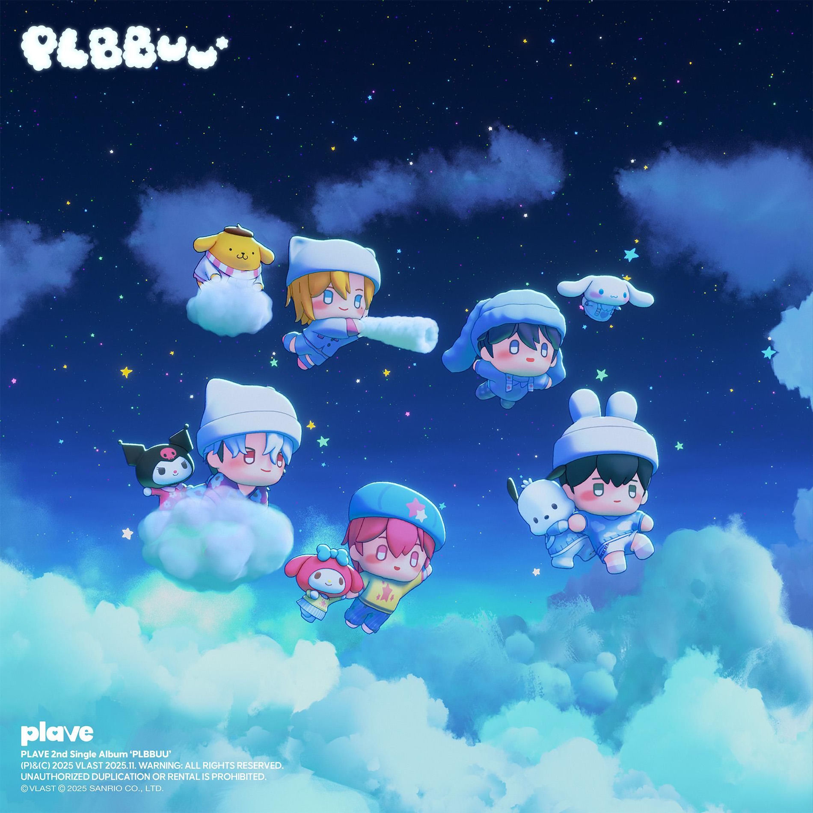
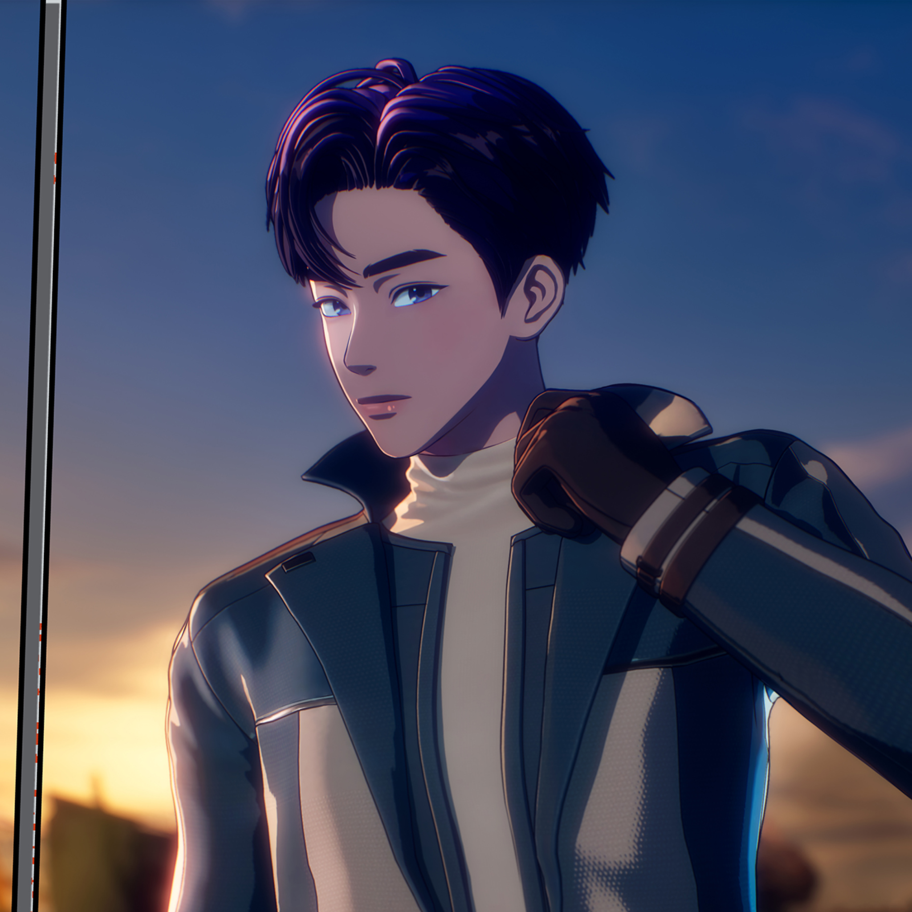

¿Quiénes son PLAVE?
PLAVE es un grupo virtual de k-pop creado por VLAST. Debutaron en 2023 y combinan música, animación y tecnología para crear una experiencia digital única debido a la interacción de los fans con ellos atraves de sus avatares.
Algunas de sus canciones más conocidas son: “Wait For You”, “BBUU!”, "Born Savage" y “Dash”. Y en sus álbumes más conocidos encontramos a "PLBBUU!" y "Caligo Pt.1"/"Caligo Pt.2"



Members

Yejun
Noah
Bamby
Eunho
Hamin
¿Qué es VLAST?
VLAST es la empresa creadora de PLAVE y del universo digital “Asterum”. La compañía combina tecnología, animación y música para crear experiencias virtuales enfocadas en idols digitales.